Colors¶
Introduction¶
Script visuals can play a critical role in the usability of the indicators we write in Pine Script®. Well-designed plots and drawings make indicators easier to use and understand. Good visual designs establish a visual hierarchy that allows the more important information to stand out, and the less important one to not get in the way.
Using colors in Pine can be as simple as you want, or as involved as your concept requires. The 4,294,967,296 possible assemblies of color and transparency available in Pine Script® can be applied to:
- Any element you can plot or draw in an indicator’s visual space, be it lines, fills, text or candles.
- The background of a script’s visual space, whether the script is running in its own pane, or in overlay mode on the chart.
- The color of bars or the body of candles appearing on a chart.
A script can only color the elements it places in its own visual space. The only exception to this rule is that a pane indicator can color chart bars or candles.
Pine Script® has built-in colors such as color.green, as well as functions like color.rgb() which allow you to dynamically generate any color in the RGBA color space.
Transparency¶
Each color in Pine Script® is defined by four values:
- Its red, green and blue components (0-255), following the RGB color model.
- Its transparency (0-100), often referred to as the Alpha channel outside Pine, as defined in the RGBA color model. Even though transparency is expressed in the 0-100 range, its value can be a “float” when used in functions, which gives you access to the 256 underlying values of the alpha channel.
The transparency of a color defines how opaque it is: zero is fully opaque, 100 makes the color—whichever it is—invisible. Modulating transparency can be crucial in more involved color visuals or when using backgrounds, to control which colors dominate the others, and how they mix together when superimposed.
Z-index¶
When you place elements in a script’s visual space, they have relative depth on the z axis; some will appear on top of others. The z-index is a value that represents the position of elements on the z axis. Elements with the highest z-index appear on top.
Elements drawn in Pine Script® are divided in groups. Each group has its own position in the z space, and within the same group, elements created last in the script’s logic will appear on top of other elements from the same group. An element of one group cannot be placed outside the region of the z space attributed to its group, so a plot can never appear on top of a table, for example, because tables have the highest z-index.
This list contains the groups of visual elements, ordered by increasing z-index, so background colors are always at the bottom of z space, and tables will always appear on top of all other elements:
- Background colors
- Plots
- Hlines
- Fills
- Boxes
- Labels
- Lines
- Tables
Note that by using explicit_plot_zorder = true in indicator() or
strategy(), you can control the relative z-index of plot*(),
hline() and
fill() visuals using their sequential order in the script.
Constant colors¶
There are 17 built-in colors in Pine Script®. This table lists their names, hexadecimal equivalent, and RGB values as arguments to color.rgb():
| Name | Hex | RGB values |
|---|---|---|
| color.aqua | #00BCD4 | color.rgb(0, 188, 212) |
| color.black | #363A45 | color.rgb(54, 58, 69) |
| color.blue | #2196F3 | color.rgb(33, 150, 243) |
| color.fuchsia | #E040FB | color.rgb(224, 64, 251) |
| color.gray | #787B86 | color.rgb(120, 123, 134) |
| color.green | #4CAF50 | color.rgb(76, 175, 80) |
| color.lime | #00E676 | color.rgb(0, 230, 118) |
| color.maroon | #880E4F | color.rgb(136, 14, 79) |
| color.navy | #311B92 | color.rgb(49, 27, 146) |
| color.olive | #808000 | color.rgb(128, 128, 0) |
| color.orange | #FF9800 | color.rgb(255, 152, 0) |
| color.purple | #9C27B0 | color.rgb(156, 39, 176) |
| color.red | #FF5252 | color.rgb(255, 82, 82) |
| color.silver | #B2B5BE | color.rgb(178, 181, 190) |
| color.teal | #00897B | color.rgb(0, 137, 123) |
| color.white | #FFFFFF | color.rgb(255, 255, 255) |
| color.yellow | #FFEB3B | color.rgb(255, 235, 59) |
In the following script, all plots use the same color.olive color with a transparency of 40, but expressed in different ways. All five methods are functionally equivalent:
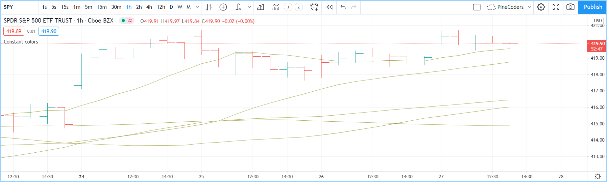//@version=5
indicator("", "", true)
// ———— Transparency (#99) is included in the hex value.
plot(ta.sma(close, 10), "10", #80800099)
// ———— Transparency is included in the color-generating function's arguments.
plot(ta.sma(close, 30), "30", color.new(color.olive, 40))
plot(ta.sma(close, 50), "50", color.rgb(128, 128, 0, 40))
// ———— Use `transp` parameter (deprecated and advised against)
plot(ta.sma(close, 70), "70", color.olive, transp = 40)
plot(ta.sma(close, 90), "90", #808000, transp = 40)
Note
The last two plot() calls specify transparency using the transp parameter.
This use should be avoided as the transp is deprecated in Pine Script® v5.
Using the transp parameter to define transparency is not as flexible because it requires an argument of input integer type,
which entails it must be known before the script is executed, and so cannot be calculated dynamically, as your script executes bar to bar.
Additionally, if you use a color argument that already includes transparency information,
as is done in the next three plot() calls,
any argument used for the transp parameter would have no effect. This is also true for other functions with a transp parameter.
The colors in the previous script do not vary as the script executes bar to bar. Sometimes, however, colors need to be created as the script executes on each bar because they depend on conditions that are unknown at compile time, or when the script begins execution on bar zero. For those cases, programmers have two options:
- Use conditional statements to select colors from a few pre-determined base colors.
- Build new colors dynamically, by calculating them as the script executes bar to bar, to implement color gradients, for example.
Conditional coloring¶
Let’s say you want to color a moving average in different colors, depending on some conditions you define. To do so, you can use a conditional statement that will select a different color for each of your states. Let’s start by coloring a moving average in a bull color when it’s rising, and in a bear color when it’s not:
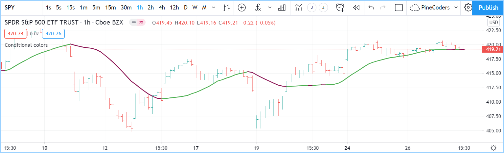//@version=5
indicator("Conditional colors", "", true)
int lengthInput = input.int(20, "Length", minval = 2)
color maBullColorInput = input.color(color.green, "Bull")
color maBearColorInput = input.color(color.maroon, "Bear")
float ma = ta.sma(close, lengthInput)
// Define our states.
bool maRising = ta.rising(ma, 1)
// Build our color.
color c_ma = maRising ? maBullColorInput : maBearColorInput
plot(ma, "MA", c_ma, 2)
Note that:
- We provide users of our script a selection of colors for our bull/bear colors.
- We define an
maRisingboolean variable which will holdtruewhen the moving average is higher on the current bar than it was on the last. - We define a
c_macolor variable that is assigned one of our two colors, depending on the value of themaRisingboolean. We use the ? : ternary operator to write our conditional statement.
You can also use conditional colors to avoid plotting under certain conditions. Here, we plot high and low pivots using a line, but we do not want to plot anything when a new pivot comes in, to avoid the joints that would otherwise appear in pivot transitions. To do so, we test for pivot changes and use na as the color value when a change is detected, so that no line is plotted on that bar:
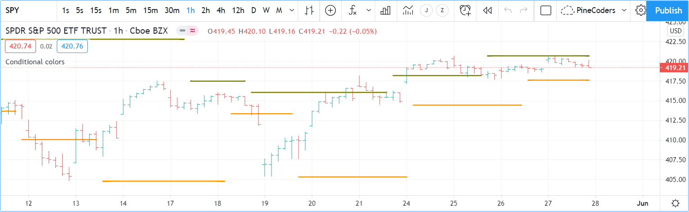//@version=5
indicator("Conditional colors", "", true)
int legsInput = input.int(5, "Pivot Legs", minval = 1)
color pHiColorInput = input.color(color.olive, "High pivots")
color pLoColorInput = input.color(color.orange, "Low pivots")
// Intialize the pivot level variables.
var float pHi = na
var float pLo = na
// When a new pivot is detected, save its value.
pHi := nz(ta.pivothigh(legsInput, legsInput), pHi)
pLo := nz(ta.pivotlow( legsInput, legsInput), pLo)
// When a new pivot is detected, do not plot a color.
plot(pHi, "High", ta.change(pHi) ? na : pHiColorInput, 2, plot.style_line)
plot(pLo, "Low", ta.change(pLo) ? na : pLoColorInput, 2, plot.style_line)
To undertand how this code works, one must first know that ta.pivothigh() and
ta.pivotlow(),
used as they are here without an argument to the source parameter,
will return a value when they find a
high/low pivot,
otherwise they return na.
When we test the value returned by the pivot function for na
using the nz() function,
we allow the value returned to be assigned to the pHi or pLo variables only when it is not na,
otherwise the previous value of the variable is simply reassigned to it, which has no impact on its value.
Keep in mind that previous values of pHi and pLo are preserved bar to bar because we use the
var keyword when initializing them, which causes the initialization to only occur on the first bar.
All that’s left to do next is, when we plot our lines, to insert a ternary conditional statement that will yield na for the color when the pivot value changes, or the color selected in the script’s inputs when the pivot level does not change.
Calculated colors¶
Using functions like color.new(), color.rgb() and color.from_gradient(), one can build colors on the fly, as the script executes bar to bar.
color.new() is most useful when you need to generate different transparency levels from a base color.
color.rgb() is useful when you need to build colors dynamically from red, green, blue, or tranparency components. While color.rgb() creates a color, its sister functions color.r(), color.g(), color.b() and color.t() can be used to extract the red, green, blue or transparency values from a color, which can in turn be used to generate a variant.
color.from_gradient() is useful to create linear gradients between two base colors. It determines which intermediary color to use by evaluating a source value against minimum and maximum values.
color.new()¶
Let’s put color.new(color, transp) to use to create different transparencies for volume columns using one of two bull/bear base colors:
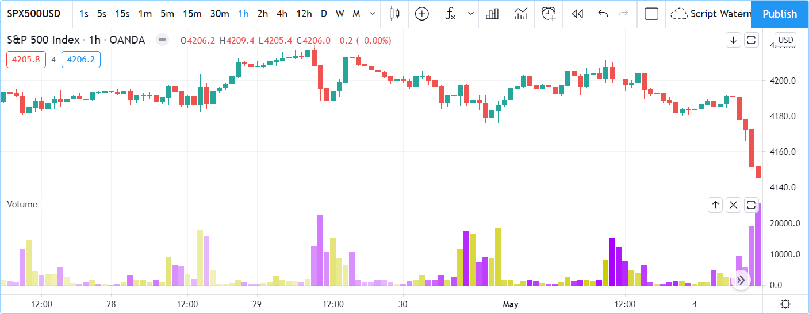//@version=5
indicator("Volume")
// We name our color constants to make them more readable.
var color GOLD_COLOR = #CCCC00ff
var color VIOLET_COLOR = #AA00FFff
color bullColorInput = input.color(GOLD_COLOR, "Bull")
color bearColorInput = input.color(VIOLET_COLOR, "Bear")
int levelsInput = input.int(10, "Gradient levels", minval = 1)
// We initialize only once on bar zero with `var`, otherwise the count would reset to zero on each bar.
var float riseFallCnt = 0
// Count the rises/falls, clamping the range to: 1 to `i_levels`.
riseFallCnt := math.max(1, math.min(levelsInput, riseFallCnt + math.sign(volume - nz(volume[1]))))
// Rescale the count on a scale of 80, reverse it and cap transparency to <80 so that colors remains visible.
float transparency = 80 - math.abs(80 * riseFallCnt / levelsInput)
// Build the correct transparency of either the bull or bear color.
color volumeColor = color.new(close > open ? bullColorInput : bearColorInput, transparency)
plot(volume, "Volume", volumeColor, 1, plot.style_columns)
Note that:
- In the next to last line of our script, we dynamically calculate the column color by varying both the base color used, depending on whether the bar is up or down, and the transparency level, which is calculated from the cumulative rises or falls of volume.
- We offer the script user control over not only the base bull/bear colors used, but also on the number of brightness levels we use. We use this value to determine the maximum number of rises or falls we will track. Giving users the possiblity to manage this value allows them to adapt the indicator’s visuals to the timeframe or market they use.
- We take care to control the maximum level of transparency we use so that it never goes higher than 80. This ensures our colors always retain some visibility.
- We also set the minimum value for the number of levels to 1 in the inputs. When the user selects 1, the volume columns will be either in bull or bear color of maximum brightness—or transparency zero.
color.rgb()¶
In our next example we use color.rgb(red, green, blue, transp) to build colors from RGBA values. We use the result in a holiday season gift for our friends, so they can bring their TradingView charts to parties:
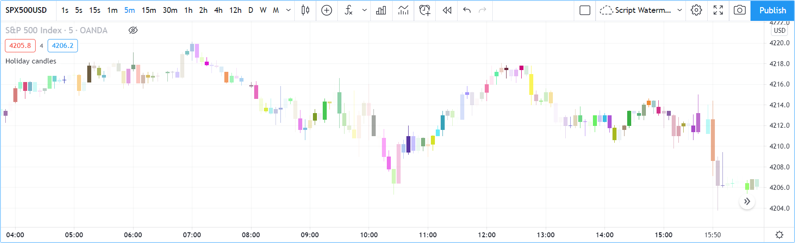//@version=5
indicator("Holiday candles", "", true)
float r = math.random(0, 255)
float g = math.random(0, 255)
float b = math.random(0, 255)
float t = math.random(0, 100)
color holidayColor = color.rgb(r, g, b, t)
plotcandle(open, high, low, close, color = c_holiday, wickcolor = holidayColor, bordercolor = c_holiday)
Note that:
- We generate values in the zero to 255 range for the red, green and blue channels, and in the zero to 100 range for transparency. Also note that because math.random() returns float values, the float 0.0-100.0 range provides access to the full 0-255 transparency values of the underlying alpha channel.
- We use the math.random(min, max, seed)
function to generate pseudo-random values. We do not use an argument for the third parameter of the function:
seed. Using it is handy when you want to ensure the repeatability of the function’s results. Called with the same seed, it will produce the same sequence of values.
color.from_gradient()¶
Our last examples of color calculations will use color.from_gradient(value, bottom_value, top_value, bottom_color, top_color). Let’s first use it in its simplest form, to color a CCI signal in a version of the indicator that otherwise looks like the built-in:
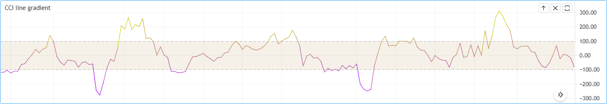//@version=5
indicator(title="CCI line gradient", precision=2, timeframe="")
var color GOLD_COLOR = #CCCC00
var color VIOLET_COLOR = #AA00FF
var color BEIGE_COLOR = #9C6E1B
float srcInput = input.source(close, title="Source")
int lenInput = input.int(20, "Length", minval = 5)
color bullColorInput = input.color(GOLD_COLOR, "Bull")
color bearColorInput = input.color(BEIGE_COLOR, "Bear")
float signal = ta.cci(srcInput, lenInput)
color signalColor = color.from_gradient(signal, -200, 200, bearColorInput, bullColorInput)
plot(signal, "CCI", signalColor)
bandTopPlotID = hline(100, "Upper Band", color.silver, hline.style_dashed)
bandBotPlotID = hline(-100, "Lower Band", color.silver, hline.style_dashed)
fill(bandTopPlotID, bandBotPlotID, color.new(BEIGE_COLOR, 90), "Background")
Note that:
- To calculate the gradient, color.from_gradient()
requires minimum and maximum values against which the argument used for the
valueparameter will be compared. The fact that we want a gradient for an unbounded signal like CCI (i.e., without fixed boundaries such as RSI, which always oscillates between 0-100), does not entail we cannot use color.from_gradient(). Here, we solve our conundrum by providing values of -200 and 200 as arguments. They do not represent the real minimum and maximum values for CCI, but they are at levels from which we do not mind the colors no longer changing, as whenever the series is outside thebottom_valueandtop_valuelimits, the colors used forbottom_colorandtop_colorwill apply. - The color progression calculated by color.from_gradient() is linear.
If the value of the series is halfway between the
bottom_valueandtop_valuearguments, the generated color’s RGBA components will also be halfway between those ofbottom_colorandtop_color. - Many common indicator calculations are available in Pine Script® as built-in functions. Here we use ta.cci() instead of calculating it the long way.
The argument used for value in color.from_gradient()
does not necessarily have to be the value of the line we are calculating. Anything we want can be used, as long as arguments for bottom_value and top_value can be supplied.
Here, we enhance our CCI indicator by coloring the band using the number of bars since the signal has been above/below the centerline:
//@version=5
indicator(title="CCI line gradient", precision=2, timeframe="")
var color GOLD_COLOR = #CCCC00
var color VIOLET_COLOR = #AA00FF
var color GREEN_BG_COLOR = color.new(color.green, 70)
var color RED_BG_COLOR = color.new(color.maroon, 70)
float srcInput = input.source(close, "Source")
int lenInput = input.int(20, "Length", minval = 5)
int stepsInput = input.int(50, "Gradient levels", minval = 1)
color bullColorInput = input.color(GOLD_COLOR, "Line: Bull", inline = "11")
color bearColorInput = input.color(VIOLET_COLOR, "Bear", inline = "11")
color bullBgColorInput = input.color(GREEN_BG_COLOR, "Background: Bull", inline = "12")
color bearBgColorInput = input.color(RED_BG_COLOR, "Bear", inline = "12")
// Plot colored signal line.
float signal = ta.cci(srcInput, lenInput)
color signalColor = color.from_gradient(signal, -200, 200, color.new(bearColorInput, 0), color.new(bullColorInput, 0))
plot(signal, "CCI", signalColor, 2)
// Detect crosses of the centerline.
bool signalX = ta.cross(signal, 0)
// Count no of bars since cross. Capping it to the no of steps from inputs.
int gradientStep = math.min(stepsInput, nz(ta.barssince(signalX)))
// Choose bull/bear end color for the gradient.
color endColor = signal > 0 ? bullBgColorInput : bearBgColorInput
// Get color from gradient going from no color to `c_endColor`
color bandColor = color.from_gradient(gradientStep, 0, stepsInput, na, endColor)
bandTopPlotID = hline(100, "Upper Band", color.silver, hline.style_dashed)
bandBotPlotID = hline(-100, "Lower Band", color.silver, hline.style_dashed)
fill(bandTopPlotID, bandBotPlotID, bandColor, title = "Band")
Note that:
- The signal plot uses the same base colors and gradient as in our previous example. We have however increased the width of the line from the default 1 to 2. It is the most important component of our visuals; increasing its width is a way to give it more prominence, and ensure users are not distracted by the band, which has become busier than it was in its original, flat beige color.
- The fill must remain unobtrusive for two reasons. First, it is of secondary importance to the visuals, as it provides complementary information, i.e.,
the duration for which the signal has been in bull/bear territory. Second, since fills have a greater z-index than plots,
the fill will cover the signal plot. For these reasons, we make the fill’s base colors fairly transparent, at 70, so they do not mask the plots.
The gradient used for the band starts with no color at all
(see the na used as the argument to
bottom_colorin the color.from_gradient() call), and goes to the base bull/bear colors from the inputs, which the conditional,c_endColorcolor variable contains. - We provide users with distinct bull/bear color selections for the line and the band.
- When we calculate the
gradientStepvariable, we use nz() on ta.barssince() because in early bars of the dataset, when the condition tested has not occurred yet, ta.barssince() will return na. Because we use nz(), the value returned is replaced with zero in those cases.
Mixing transparencies¶
In this example we take our CCI indicator in another direction. We will build dynamically adjusting extremes zone buffers using a Donchian Channel (historical highs/lows) calculated from the CCI. We build the top/bottom bands by making them 1/4 the height of the DC. We will use a dynamically adjusting lookback to calculate the DC. To modulate the lookback, we will calculate a simple measure of volatility by keeping a ratio of a short-period ATR to a long one. When that ratio is higher than 50 of its last 100 values, we consider the volatility high. When the volatility is high/low, we decrease/increase the lookback.
Our aim is to provide users of our indicator with:
- The CCI line colored using a bull/bear gradient, as we illustrated in our most recent examples.
- The top and bottom bands of the Donchian Channel, filled in such a way that their color darkens as a historical high/low becomes older and older.
- A way to appreciate the state of our volatility measure, which we will do by painting the background with one color whose intensity increases when volatility increases.
This is what our indicator looks like using the light theme:
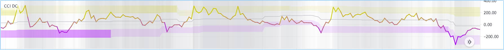And with the dark theme:
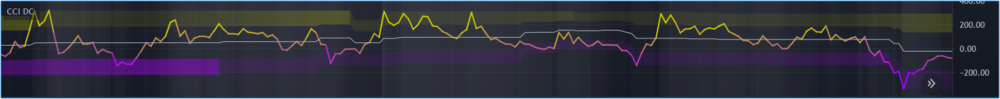//@version=5
indicator("CCI DC", precision = 6)
color GOLD_COLOR = #CCCC00ff
color VIOLET_COLOR = #AA00FFff
int lengthInput = input.int(20, "Length", minval = 5)
color bullColorInput = input.color(GOLD_COLOR, "Bull")
color bearColorInput = input.color(VIOLET_COLOR, "Bear")
// ————— Function clamps `val` between `min` and `max`.
clamp(val, min, max) =>
math.max(min, math.min(max, val))
// ————— Volatility expressed as 0-100 value.
float v = ta.atr(lengthInput / 5) / ta.atr(lengthInput * 5)
float vPct = ta.percentrank(v, lengthInput * 5)
// ————— Calculate dynamic lookback for DC. It increases/decreases on low/high volatility.
bool highVolatility = vPct > 50
var int lookBackMin = lengthInput * 2
var int lookBackMax = lengthInput * 10
var float lookBack = math.avg(lookBackMin, lookBackMax)
lookBack += highVolatility ? -2 : 2
lookBack := clamp(lookBack, lookBackMin, lookBackMax)
// ————— Dynamic lookback length Donchian channel of signal.
float signal = ta.cci(close, lengthInput)
// `lookBack` is a float; need to cast it to int to be used a length.
float hiTop = ta.highest(signal, int(lookBack))
float loBot = ta.lowest( signal, int(lookBack))
// Get margin of 25% of the DC height to build high and low bands.
float margin = (hiTop - loBot) / 4
float hiBot = hiTop - margin
float loTop = loBot + margin
// Center of DC.
float center = math.avg(hiTop, loBot)
// ————— Create colors.
color signalColor = color.from_gradient(signal, -200, 200, bearColorInput, bullColorInput)
// Bands: Calculate transparencies so the longer since the hi/lo has changed,
// the darker the color becomes. Cap highest transparency to 90.
float hiTransp = clamp(100 - (100 * math.max(1, nz(ta.barssince(ta.change(hiTop)) + 1)) / 255), 60, 90)
float loTransp = clamp(100 - (100 * math.max(1, nz(ta.barssince(ta.change(loBot)) + 1)) / 255), 60, 90)
color hiColor = color.new(bullColorInput, hiTransp)
color loColor = color.new(bearColorInput, loTransp)
// Background: Rescale the 0-100 range of `vPct` to 0-25 to create 75-100 transparencies.
color bgColor = color.new(color.gray, 100 - (vPct / 4))
// ————— Plots
// Invisible lines for band fills.
hiTopPlotID = plot(hiTop, color = na)
hiBotPlotID = plot(hiBot, color = na)
loTopPlotID = plot(loTop, color = na)
loBotPlotID = plot(loBot, color = na)
// Plot signal and centerline.
p_signal = plot(signal, "CCI", signalColor, 2)
plot(center, "Centerline", color.silver, 1)
// Fill the bands.
fill(hiTopPlotID, hiBotPlotID, hiColor)
fill(loTopPlotID, loBotPlotID, loColor)
// ————— Background.
bgcolor(bgColor)
Note that:
- We clamp the transparency of the background to a 100-75 range so that it doesn’t overwhelm. We also use a neutral color that will not distract too much. The darker the background is, the higher our measure of volatility.
- We also clamp the transparency values for the band fills between 60 and 90. We use 90 so that when a new high/low is found and the gradient resets, the starting transparency makes the color somewhat visible. We do not use a transparency lower than 60 because we don’t want those bands to hide the signal line.
- We use the very handy ta.percentrank() function to generate a 0-100 value from our ATR ratio measuring volatility. It is useful to convert values whose scale is unknown into known values that can be used to produce transparencies.
- Because we must clamp values three times in our script, we wrote an
f_clamp()function, instead of explicitly coding the logic three times.
Tips¶
Designing usable colors schemes¶
If you write scripts intended for other traders, try to avoid colors that will not work well in some environments, whether it be for plots, labels, tables or fills. At a minimum, test your visuals to ensure they perform satisfactorily with both the light and dark TradingView themes; they are the most commonly used. Colors such as black and white, for example, should be avoided.
Build the appropriate inputs to provide script users the flexibility to adapt your script’s visuals to their particular environments.
Take care to build a visual hierarchy of the colors you use that matches the relative importance of your script’s visual components. Good designers understand how to achieve the optimal balance of color and weight so the eye is naturally drawn to the most important elements of the design. When you make everything stand out, nothing does. Make room for some elements to stand out by toning down the visuals surrounding it.
Providing a selection of color presets in your inputs — rather than a single color that can be changed — can help color-challenged users. Our Technical Ratings demonstrates one way of achieving this.
Plot crisp lines¶
It is best to use zero transparency to plot the important lines in your visuals, to keep them crisp. This way, they will show through fills more precisely. Keep in mind that fills have a higher z-index than plots, so they are placed on top of them. A slight increase of a line’s width can also go a long way in making it stand out.
If you want a special plot to stand out, you can also give it more importance by using multiple plots for the same line. These are examples where we modulate the successive width and transparency of plots to achieve this:
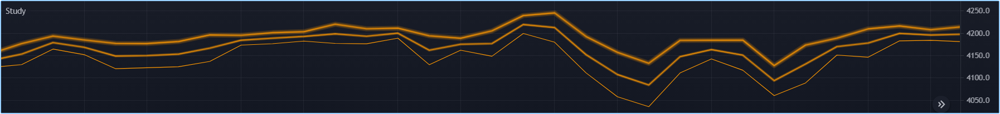//@version=5
indicator("")
plot(high, "", color.new(color.orange, 80), 8)
plot(high, "", color.new(color.orange, 60), 4)
plot(high, "", color.new(color.orange, 00), 1)
plot(hl2, "", color.new(color.orange, 60), 4)
plot(hl2, "", color.new(color.orange, 00), 1)
plot(low, "", color.new(color.orange, 0), 1)
Customize gradients¶
When building gradients, adapt them to the visuals they apply to. If you are using a gradient to color candles, for example, it is usually best to limit the number of steps in the gradient to ten or less, as it is more difficult for the eye to perceive intensity variations of discrete objects. As we did in our examples, cap minimum and maximum transparency levels so your visual elements remain visible and do not overwhelm when it’s not necessary.
Color selection through script settings¶
The type of color you use in your scripts has an impact on how users of your script will be able to change the colors of your script’s visuals. As long as you don’t use colors whose RGBA components have to be calculated at runtime, script users will be able to modify the colors you use by going to your script’s “Settings/Style” tab. Our first example script on this page meets that criteria, and the following screenshot shows how we used the script’s “Settings/Style” tab to change the color of the first moving average:
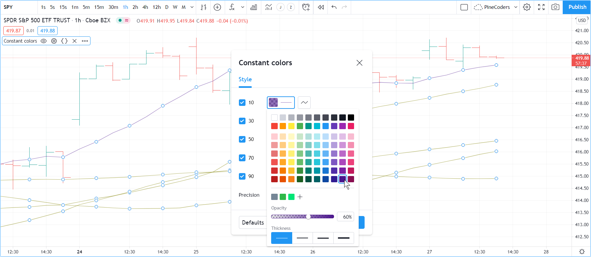If your script uses a calculated color, i.e., a color where at least one of its RGBA components can only be known at runtime, then the “Settings/Style” tab will NOT offer users the usual color widgets they can use to modify your plot colors. Plots of the same script not using calculated colors will also be affected. In this script, for example, our first plot() call uses a calculated color, and the second one doesn’t:
//@version=5
indicator("Calculated colors", "", true)
float ma = ta.sma(close, 20)
float maHeight = ta.percentrank(ma, 100)
float transparency = math.min(80, 100 - maHeight)
// This plot uses a calculated color.
plot(ma, "MA1", color.rgb(156, 39, 176, transparency), 2)
// This plot does not use a calculated color.
plot(close, "Close", color.blue)
The color used in the first plot is a calculated color because its transparency can only be known at runtime.
It is calculated using the relative position of the moving average in relation to its past 100 values.
The greater percentage of past values are below the current value, the higher the 0-100 value of maHeight will be.
Since we want the color to be the darkest when maHeight is 100, we subtract 100 from it to obtain the zero transparency then.
We also cap the calculated transparency value to a maximum of 80 so that it always remains visible.
Because that calculated color is used in our script, the “Settings/Style” tab will not show any color widgets:
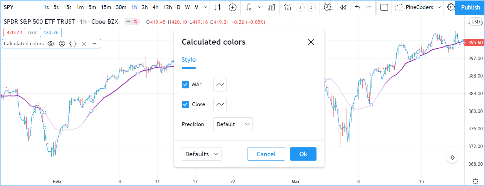The solution to enable script users to control the colors used is to supply them with custom inputs, as we do here:
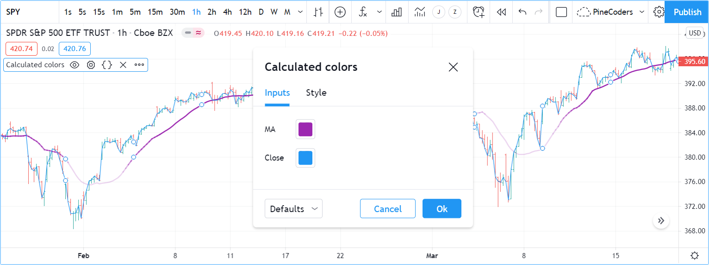//@version=5
indicator("Calculated colors", "", true)
color maInput = input.color(color.purple, "MA")
color closeInput = input.color(color.blue, "Close")
float ma = ta.sma(close, 20)
float maHeight = ta.percentrank(ma, 100)
float transparency = math.min(80, 100 - maHeight)
// This plot uses a calculated color.
plot(ma, "MA1", color.new(maInput, transparency), 2)
// This plot does not use a calculated color.
plot(close, "Close", closeInput)
Notice how our script’s “Settings” now show an “Inputs” tab, where we have created two color inputs. The first one uses color.purple as its default value. Whether the script user changes that color or not, it will then be used in a color.new() call to generate a calculated transparency in the plot() call. The second input uses as its default the built-in color.blue color we previously used in the plot() call, and simply use it as is in the second plot() call.